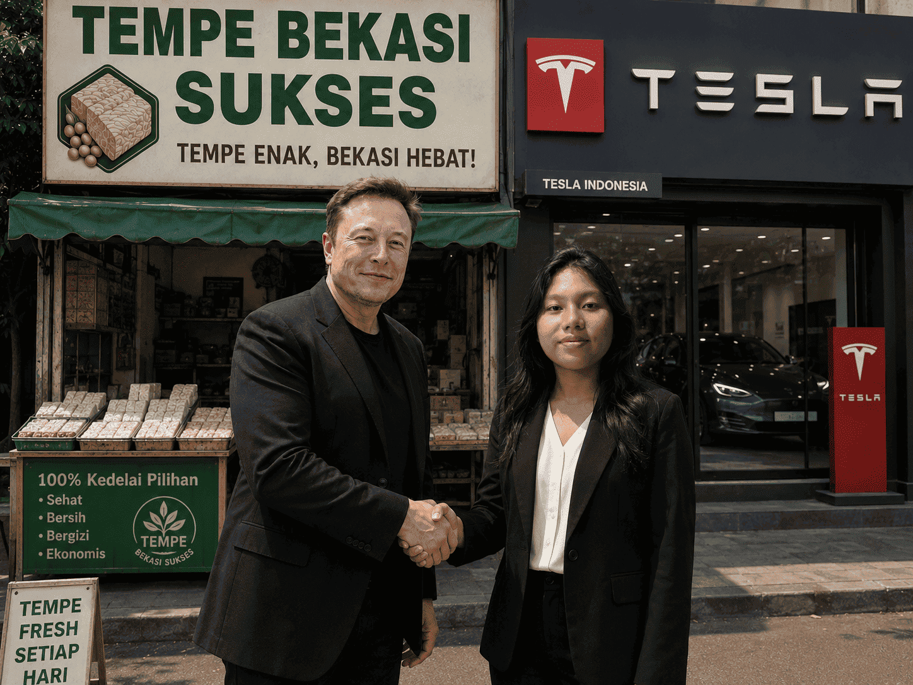

Sebagai perusahaan tempe lokal yang terus berkembang, Tempe Bekasi Sukses percaya bahwa kolaborasi merupakan kunci utama dalam menciptakan inovasi dan memperluas jangkauan usaha.
Melalui semangat kerja sama, kami terus membuka peluang kemitraan dengan berbagai pihak untuk mendukung perkembangan UMKM Indonesia dan meningkatkan kualitas produk lokal.
Bekasi, Indonesia
10.000+ Tempe Terjual
2026